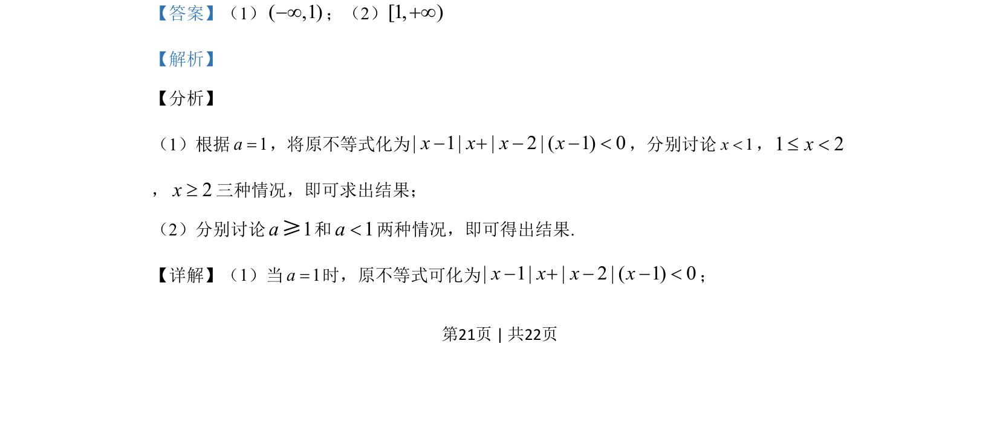

考点：绝对值不等式 分类讨论 参数取值范围
已知f(x)=|x-a|x+|x-2|(x-a)（选修4-5），分当a=1时求f(x)<0解集，及x∈(-∞,1)时f(x)<0恒成立求a范围。

📄 原 PDF 第 21 页：
素材/真题/吉林/2008-2024·（吉林）数学高考真题/2019年高考数学试卷（理）（新课标Ⅱ）（解析卷）.pdf
23.[选修4-5：不等式选讲] 已知( ) | | | 2 | ( ).f x x a x x x a= − + − − （1）当1a=时，求不等式( ) 0f x<的解集； （2）若( ,1)xÎ −¥时，( ) 0f x<，求a的取值范围.
【答案】（1）( ,1)−¥；（2）[1, )+¥ 【解析】 【分析】 （1）根据1a=，将原不等式化为| 1| | 2 | ( 1) 0x x x x− + − − <，分别讨论1x<，1 2x£ < ，2x³三种情况，即可求出结果； （2）分别讨论1a≥和1a<两种情况，即可得出结果. 【详解】（1）当1a=时，原不等式可化为| 1| | 2 | ( 1) 0x x x x− + − − <；